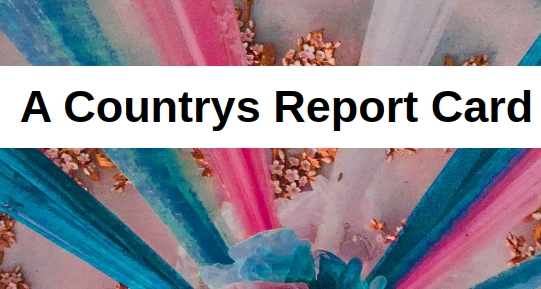
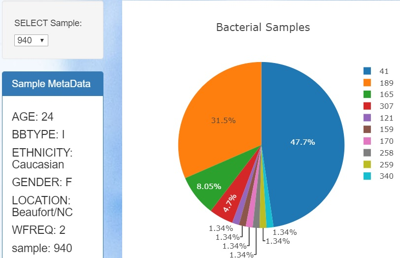

web based Projects
This page will showcase some full stack apps I have written. writeing apps useing flask is so much fun as i can see how many different technology come together to create a project. I utilized heroku to deploy my app and use python/Flask , javaScript/ D3 , plotly and html/css.
- Plotly Dash app: Country Report 
- Plotly Heroku: full stack visual app 
- Leaflet Web Maping
- D3 web graph
- Weather Analysis
Github code I wanted to create an app using only python with a little html and javascript as i could. And that result is the country report the app I have created renders and api then using plotly graphs and renders it on the web page see github code for more detail.
Plotly Heroku Github repo . I was tasked with creating an Full stack interactive dashboard to exploring belly button Biodiversity : Belly button Biodiversity data set. Data set was stored in db folder bellybutton.sqlite. I used a python flask app to display the information in json form created an interactive pie chart that changes based on the data
Uses U.S. Geological Survey (USGS) site, the USGS provides earthquake data in different formats, updated every 5 minutes. I Created a map using Leaflet that plots the earthquakes from data set based on their longitude and latitude.
this graph is based on ACS 1-year estimates: https://factfinder.census.gov/faces/nav/jsf/pages/searchresults.xhtml my graph is useing health care vs income and poverty clicking on the bottom x axis will switching between the two the main code is done in js/test2.js I pulled the data in useng d3.csv from the file data.csv useing a function I used vs code , html some CSS javaScript /d3
I built this website using data and work that was done with the project https://github.com/jurioste4/Python_api_homework/blob/master/api_weather This website I took the plots and image from my python project with Link to that above I Used HTML/CSS and some JavaScript as well as bootstrap Main website is index.html with each graph getting a page Humidity.html, maxtemp.html, cloudiness.html and testcon.html All are linked from the main web page. I created a python scrip located in ##convert_CSV_HTML.ipynb to convert ##cities.csv under resources from csv to html. Resulting in convertcsv.htm Can see the table under data nav bar button.